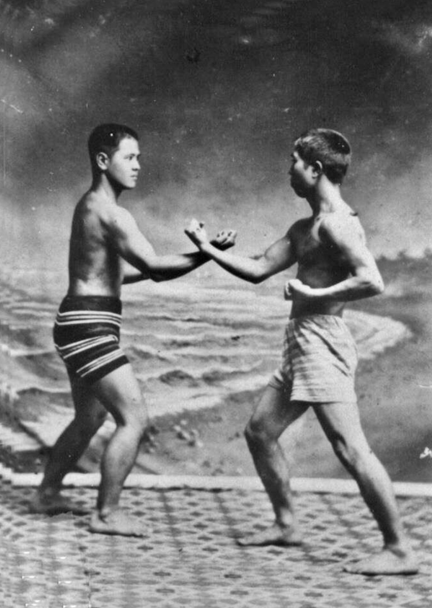

Uma Longa viagem começa com um único passo.
Lao-Tsé
Sobre Nós
Somos um pequeno Dojo de Karate Okinawano localizado em São Paulo, Brasil. Temos uma orientação para à defesa pessoal. Bebemos da tradição do karate antigo e lançamos nosso olhar no que há de mais eclético e eficiênte no karate modermo.
Venha nos conhecer!

Nossos Princípios
- 一 Cultivar o pensamento crítico e analítico em todos os temas que atravessam o Karatê. Tais como: a violência, a defesa pessoal, o nacionalismo, a educação física, a história, o esporte, a filosofia, etc;
- 二 Defender a prática de um Karatê efetivo, eficiente e moderno;
- 三 Conservar a tradição como fonte histórica de conhecimento marcial sem permitir que a tradição congele a arte em um estado de acriticidade e ineficiência;
- 四 Balizar o caminho marcial (Do - 道) nos princípios científicos da educação física, psicologia, antropologia, etc.;
- 五 Praticar um Karatê humanista, laico, lógico e racional que se apropria dos conhecimentos historicamente acumulados para projetar no futuro, através das práticas do hoje, uma arte que faça sentido e que permaneça popular e existente.